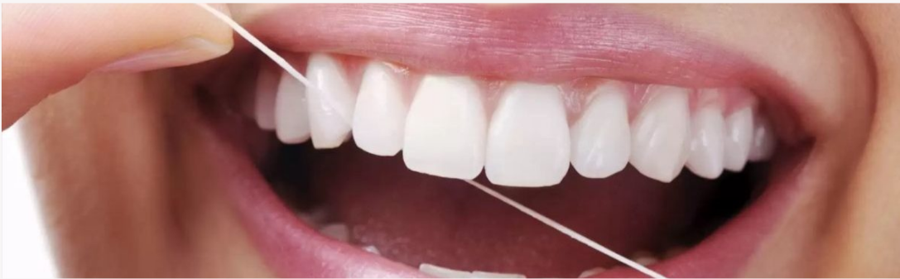
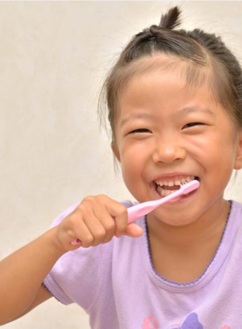
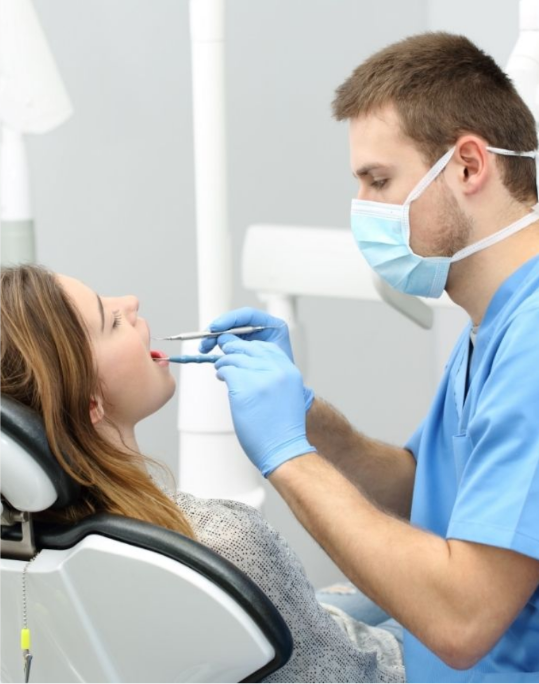

Introdução
A saúde bucal é essencial para o bem-estar geral, e a alimentação desempenha um papel fundamental nesse processo. Certos alimentos podem fortalecer os dentes e gengivas, enquanto outros podem contribuir para problemas como cáries e doenças gengivais.
Qualidade e Vida
A saúde bucal impacta diretamente na qualidade de vida, afetando funções essenciais como a mastigação, fundamental para uma nutrição adequada. Uma boa saúde bucal contribui para uma estética facial harmoniosa, impactando a autoestima e a confiança social. A capacidade de falar com clareza e sem dificuldades também está intrinsecamente ligada à saúde dos dentes e gengivas. Problemas bucais podem levar a dificuldades na comunicação, afetando as relações interpessoais e profissionais. Em resumo, cuidar da saúde bucal é investir na qualidade de vida em todas as suas dimensões.
Problemas Comuns
Problemas bucais comuns, como cáries, traumas dentais e erosão dental, são altamente prevalentes na população e estão frequentemente associados a hábitos alimentares inadequados e falta de higiene oral. A cárie, causada pela ação de bactérias que se alimentam de açúcares, leva à destruição progressiva do esmalte e dentina dos dentes, podendo resultar em dor, infecção e perda dentária. A gengivite, uma inflamação da gengiva, é frequentemente causada por acúmulo de placa bacteriana e pode progredir para periodontite, uma doença que afeta os tecidos de suporte dos dentes, levando à perda óssea e, consequentemente, à perda dos dentes. A erosão dental, por sua vez, é a perda de estrutura dentária causada por ácidos, seja através do consumo excessivo de alimentos e bebidas ácidas, seja por refluxo gastroesofágico. A prevenção desses problemas envolve uma combinação de higiene oral adequada, dieta equilibrada e consultas regulares ao dentista.
Veja a baixo mais sobre esses problemas e como prevenir:
Problemas comuns
Cárie Dentária
Como dito acima, a cárie é causada pela ação de bactérias que se alimentam de açúcares, leva à destruição progressiva do esmalte e dentina dos dentes, podendo resultar em dor, infecção e perda dentária.
O consumo excessivo de açúcar, especialmente de açúcares livres encontrados em doces, refrigerantes, sucos industrializados e outros alimentos processados, é um dos principais fatores de risco para o desenvolvimento de cáries. As bactérias presentes na placa dental metabolizam esses açúcares, produzindo ácidos que desmineralizam o esmalte dos dentes, levando à formação de cavidades. Reduzir o consumo de açúcar e optar por alternativas mais saudáveis, como frutas e água, é fundamental para a prevenção de cáries.
A placa bacteriana, um biofilme viscoso e incolor formado por comunidades complexas de bactérias, adere à superfície dos dentes. Esta placa fornece um ambiente ideal para o crescimento de bactérias cariogênicas (que causam cáries), que convertem os açúcares em ácidos. A remoção regular da placa através de uma higiene bucal eficaz, incluindo escovação adequada e uso do fio dental, é crucial para evitar o acúmulo e a formação de cáries.
A higiene bucal adequada é a primeira linha de defesa contra as cáries. Isso inclui escovar os dentes pelo menos duas vezes ao dia com uma escova de cerdas macias e pasta de dente fluoretada, utilizando a técnica correta para remover a placa bacteriana eficazmente. O uso diário do fio dental também é essencial para limpar as áreas entre os dentes, onde a escova não alcança. A combinação da escovação, uso do fio dental e visitas regulares ao dentista formam a base de uma boa higiene bucal preventiva.
Traumas Dentais
Traumas dentais são lesões que afetam os dentes e estruturas ao redor, como gengiva, ossos e tecidos moles, geralmente resultantes de impactos diretos. Eles podem ocorrer devido a quedas, acidentes esportivos, agressões ou até mesmo em situações cotidianas, como durante atividades físicas ou brincadeiras.
Incentivar o uso de formas não agressivas de brincadeiras e jogos é fundamental na prevenção de traumas dentais. Explicar as consequências de comportamentos violentos ou imprudentes, como quedas e colisões, é crucial para a conscientização de crianças e adolescentes. Supervisionar brincadeiras e atividades de alta intensidade, especialmente em crianças pequenas, pode evitar muitos acidentes. Orientar sobre os riscos de atividades sem supervisão adequada também é um ponto importante.
Utilizar elementos de proteção, como protetor bucal e capacete, é essencial em esportes de contato e atividades de risco. O protetor bucal personalizado, feito sob medida por um dentista, oferece a melhor proteção. Para crianças, é importante orientar os pais sobre a importância do uso de capacetes em bicicletas e outros veículos, bem como em atividades que envolvam quedas ou impactos. A escolha correta do capacete, com certificação de segurança, é crucial para minimizar o risco de lesões.
Promover a cultura de paz e a não agressão começa em casa e na escola. Ensinar as crianças a resolver conflitos de forma pacífica e respeitosa é fundamental para reduzir a violência e o risco de traumas. Programas educativos em escolas que enfatizem a importância do respeito mútuo e a resolução pacífica de conflitos podem impactar significativamente a prevenção de traumas. Criar um ambiente seguro e acolhedor contribui para que as crianças se sintam mais confortáveis e menos propensas a envolver-se em comportamentos violentos.
Erosão Ácida dos Dentes
O consumo frequente de produtos ácidos, como refrigerantes, sucos cítricos em excesso, e até mesmo frutas ácidas consumidas com muita frequência, pode causar erosão significativa do esmalte dentário. O ácido presente nessas substâncias dissolve o mineral da superfície dos dentes, deixando-os mais vulneráveis à cárie e a outros problemas. Evitar o consumo excessivo e enxaguar a boca com água após a ingestão são medidas importantes.
Distúrbios alimentares como bulimia e anorexia nervosa, que envolvem episódios frequentes de vômito, contribuem para a erosão dos dentes devido à alta acidez do suco gástrico. O contato repetido do ácido com os dentes desgasta o esmalte e a dentina, causando sensibilidade, manchas e, em casos graves, perda de estrutura dentária. Buscar ajuda profissional para o tratamento de distúrbios alimentares é essencial para a saúde bucal e geral.
Além dos alimentos e distúrbios, o refluxo gastroesofágico (DRGE) também pode causar erosão ácida nos dentes, devido ao contato frequente do ácido do estômago com a dentição. O uso de medicamentos também pode contribuir para um aumento da acidez na boca, aumentando o risco de erosão.
Para prevenir a erosão ácida, é crucial consumir alimentos ácidos com moderação, enxaguar a boca com água após a ingestão, e praticar uma higiene bucal adequada, incluindo escovação duas vezes ao dia com pasta de dentes fluoretada e o uso diário do fio dental. Visitas regulares ao dentista para check-ups e limpeza profissional também são essenciais para detectar e tratar precocemente qualquer sinal de erosão.
Benefícios das Frutas e Verduras
As frutas e verduras são essenciais para a saúde, fornecendo vitaminas, minerais e antioxidantes que ajudam a fortalecer o sistema imunológico, melhorar a digestão e aumentar os níveis de energia.
Além disso, uma alimentação rica em cores garante variedade nutricional e contribui para uma vida mais saudável.
Frutas e Vegetais
- Ricos em fibras e vitaminas, ajudam a limpar os dentes e estimular a produção de saliva.
Vitamina C
A vitamina C é um antioxidante que fortalece os vasos sanguíneos, contribuindo para a saúde das gengivas e prevenindo doenças periodontais.
Vitamina E
A vitamina E ajuda a proteger os tecidos bucais contra os radicais livres, prevenindo o envelhecimento precoce e o aparecimento de doenças.
Vitamina A
A vitamina A é essencial para a saúde do esmalte dos dentes e ajuda a prevenir o aparecimento de cáries.
Queijo, Leite e Iogurte
Leite, queijo e iogurte são alimentos que trazem diversos benefícios para a saúde bucal, principalmente devido aos seus nutrientes e propriedades. Estes alimentos são aliados valiosos para a manutenção da saúde dos dentes e gengivas, desde que consumidos de forma balanceada. É sempre bom lembrar que, após consumir produtos lácteos, é importante realizar a higiene bucal adequada para evitar o acúmulo de resíduos. Seus principais benefícios são:
-
Fortalecimento do esmalte dentário
-
Proteção contra cáries
-
Ação Anti-inflamatória
-
Redução do mau hálito
-
Estimulação da produção de saliva
Água
A hidratação adequada é essencial para a produção de saliva, que protege os dentes de bactérias e acides.
Chá Verde
O chá verde é rico em anti-oxidante que combatem as bactérias, previna a placa bacteriana e fortalecem as gengivas.
Peixes
Peixe como Salmão, Atum e Sardinha são fontes de cálcio, fósforo e vitamina D, importantes para a saúde bucal e óssea.
Frango
O frango é uma fonte de proteínas e zinco, que ajudam a fortalecer o esmalte dental e combater as bactérias.
Carne Bovina Magra
A carne bovina magra é rica em proteínas, ferro e zinco, que contribuem para a saúde bucal e o bem-estar geral.
Aveia
A aveia é rica em fibras que estimulam a produção de saliva, ajudando a limpar os dentes e neutralizar ácidos.
Pão integral
O pão integral é uma fonte de fibras e vitaminas do complexo B, que ajudam a fortalecer os dentes e as gengivas.
Ovos
Os ovos são uma excelente fonte de proteína e vitamina D contribuindo para a saúde dos dentes e gengivas.
Dicas de Cuidado com os Dentes
Uso do Fio dental
Limpeza Profunda
-
O fio dental remove placa e restos de comida entre os dentes, onde a escova não alcança.
-
O uso regular do fio dental previne gengivite e periodontite, doenças que afetam a saúde bucal e geral.
Prevencção de Doenças

Escovação correta dos Dentes
-
Escove os dentes com movimentos circulares e suaves, atingindo todas as superfícies.
-
Troque a escova de dentes a cada 3 meses ou quando a cerdas, estiver desgastadas.
-
A pasta de dente com flúor protege o esmalte dos dentes, fortelecendo-os contra cáries.
Escovar por dois minutos
Trocar a escova
Usar pasta fluoretada

Limpeza Regulares ao Dentista
-
Visitas regulares ao dentista garagem a remoção de placa e tártaro, previnindo doeças.
-
O dentista pode detectar problemas bucais em estágio iniciais, facilitando o tratamento.
-
O dentista oferece orientações específicas para a saúde bucal, como técnicas de escovação e uso do fio dental.
Limpeza profissional
Diagnósticos precoce
Orientação personalizada
